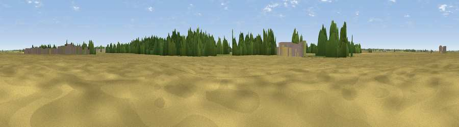

Viewpoint near Spridlington
#43703 in England · top 88% of its area beats it · near SpridlingtonThe view, rendered

A 360° render of this exact spot computed from the terrain model, tree cover and land cover — summer colours, afternoon light, calibrated against photographs of famous viewpoints. Real trees, hedges and buildings will differ in detail.
The panorama
Grey silhouette: terrain skyline in each direction (720 bearings, Earth curvature and refraction included). Dashed green: skyline with trees (+15 m) and buildings (+8 m) as obstacles. Blue strip: how far the ground is visible on each bearing.
Where the view opens
Wedge length = distance to the farthest visible ground on that bearing (vegetation-aware). Rings at 10, 25 and 50 km.
What fills the view
72% cropland · 16% grassland · 10% woodland · 1% built-up
Angular shares of the visible panorama (visual magnitude), not map area. Landscape diversity 0.36 (0–1 Shannon).
Key numbers
More beautiful places nearby
The staircase of upgrades: each row has a higher view potential than everything closer. Driving times are estimates from straight-line distance, calibrated against real road routing — check an actual route before setting out.
| Place | Direction | Drive | Score |
|---|---|---|---|
| Viewpoint near Owmby-by-Spital | W · 3 km | ~8 min | 32.4 |
| Viewpoint near Owmby-by-Spital | WNW · 4 km | ~9 min | 38.2 |
| Viewpoint near Ingham | WSW · 8 km | ~16 min | 46.9 |
| Viewpoint near Claxby | NE · 12 km | ~22 min | 61.7 |
| Viewpoint near Claxby | NE · 12 km | ~22 min | 64.9 |
| Viewpoint near Claxby | NE · 12 km | ~23 min | 71.5 |
| Viewpoint near Oughtibridge | W · 71 km | ~95 min | 72.5 |
| Viewpoint near Wharncliffe Side | W · 73 km | ~96 min | 75.2 |
53.36196, -0.44557 · source: osm peak · position refined by local search. Computed location — check access rights before visiting.